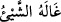
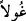
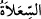
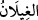
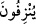
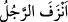
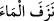
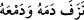

de onunla sarhoş olurlar.” buyurmuş, dünyadaki şarap ve kumar hakkında: “Sana,
şarap ve kumar hakkında soru sorarlar. De ki: Her ikisinde de büyük bir günah ve
insanlar için bir takım faydalar vardır. Ancak her ikisinin de günahı faydasından
daha büyüktür.” (el-Bakara 2/219) ve yine “Ey iman edenler! Şarap, kumar, dikili
taşlar (putlar), fal ve şans okları birer şeytan işi pisliktir; bunlardan uzak durun ki
kurtuluşa eresiniz.” (el-Mâide 5/90) kavliyle tenbih ettiği her kötülüğü cennet
şarabından kaldırmıştır.
Bir şey kişiyi hiç anlamadığı yerden yakaladığı ve hiç hissetmediği yerden helak ettiği
zaman “ denilir. Bundan dolayı cadı ve cinlere “ denilmiştir. “
cinlerin büyücüleridir. Bu konu “el-Hicr” sûresinde geçmişti. Bahru’l-ulûm’da der ki:
İnsanların vadi, sahra ve ıssız yerlerde gördükleri gûl bundandır. Bu gûl gerçeğini,
Mûtezileden başka tekzip ve inkar eden bir zümre yoktur. Bu hususta Hz. Peygamber
(s.a.)’in hadisi olmasına rağmen Mûtezile gûl meselesini Arapların uydurduğu
yalanlardan saymışlardır. Peygamberimiz (s.a.) şöyle buyuruyor: “Gûl yabaniler
musallat olduğu zaman ezan okuyunuz.”[207]
İbn Melek der ki: “Hz. Peygamber (s.a.)’in “Hastalığın sirâyet etmesinde
uğursuzluk ve gûl yoktur”[208] sözündeki “gûl” kelimesi “ kelimesinin
müfredidir. “ ise bir çeşit cindir. Araplar bunların çöl, sahra ve vâdilerde bulunup
kendi kendilerine bir takım tasarruf ve faaliyetlerde bulunduklarına inanırlar. Bu gûl
yabaniler insanlara değişik şekil ve renklerde görünürler. İnsanları yollarından saptırıp
helâk ederler. Şayet Hz. Peygamber (s.a.) “gûl yabaniler musallat olup değişik renk ve
şekillerde karşınıza çıktığı zaman ezan okuyunuz,” buyurduğu halde ‘böyle bir şey
yoktur ve bu vehimden ibaret bir hayvandır’ demenin mânâsı nedir? denilirse buna şöyle
cevap verilir: Evet, ilk dönemlerde böyle bir şey vardı. Sonra Allah Teâlâ bunları
kullardan def edip bertaraf etmiştir. Yahut yok sayılan, gûl yabanilerin varlığı değil
Arapların inandığı gibi onların kendi kendilerine bir takım tasarruf ve faaliyetlerde
bulunuyor, olmalarıdır.” Yani gûl yabani vardır; ancak böyle değişik renk ve şekillerde
insanların karşılarına çıkması onları yollarından saptırıp helakine sebep olması söz
konusu değildir. el-Müfredât’ta der ki: “Gûl” kelimesi helak eden her şey için
kullanılır. Mesnevi’de der ki:
Hakk’ı zikret, gulyabanilerin sesini yak!
Mevlana hakkın zikrini hadisi şerifteki ezan sözünden aldı; “gıylan” ile de her ne
olursa olsun sâliki, hak yolundan saptıran şeyi murad etti.
“Ne de onunla sarhoş olurlar” Kişinin sarhoşluktan aklı gidince “ denilir. Şayet “”nin kesresiyle “ şeklinde okunursa bu
sefer “ denilir ki “kişi sarhoş oldu ve aklı gitti” yahut “şarabı bitti” demektir.
el-Müfredât’ta der ki: “ demek “yavaş yavaş kuyudan suyun tamamını çıkardı”
demektir. Yine “ ifadesi ise kanını ve gözyaşını tamamen akıtıp boşalttı,